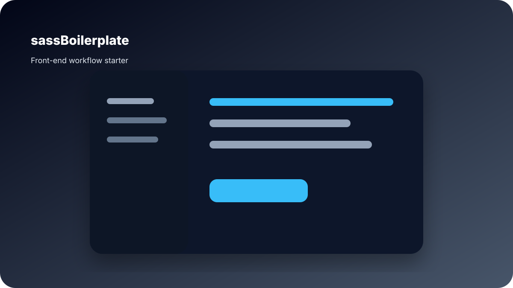

sassBoilerplate
Created a front-end starter project to speed up static website development and organize styling/build workflow.

Role
Creator / Developer
Type
Front-end starter toolkit
Focus
Setup speed and workflow consistency
What I worked on
- Reusable front-end project structure.
- SCSS/Sass workflow organization.
- Static website development starting point.
- Build and folder structure thinking.
- Developer productivity and repeatable setup.
This project supports my front-end-aware product design positioning because it shows practical implementation workflow thinking.